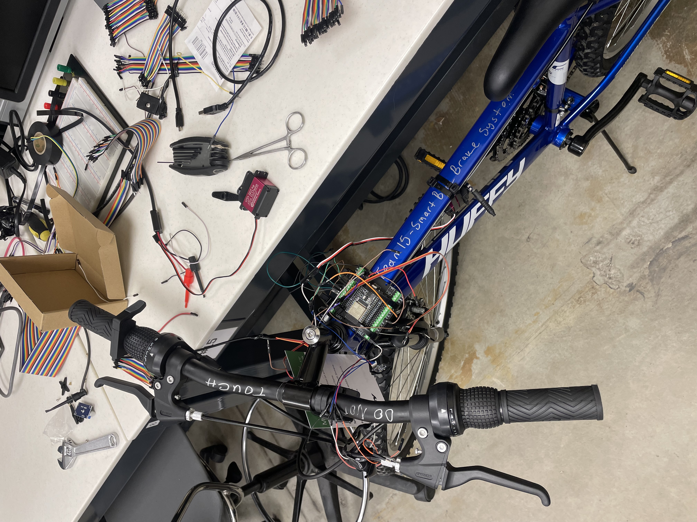
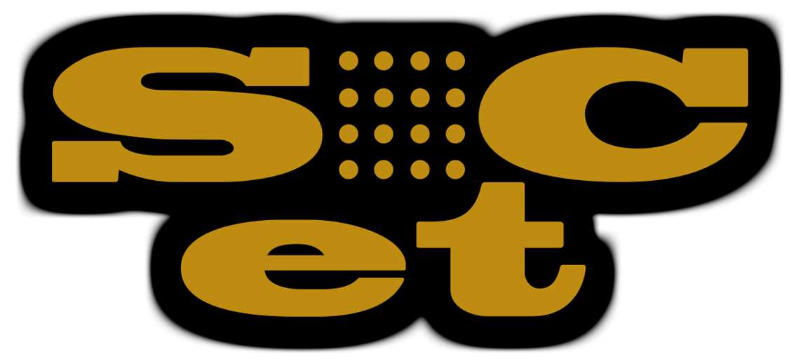
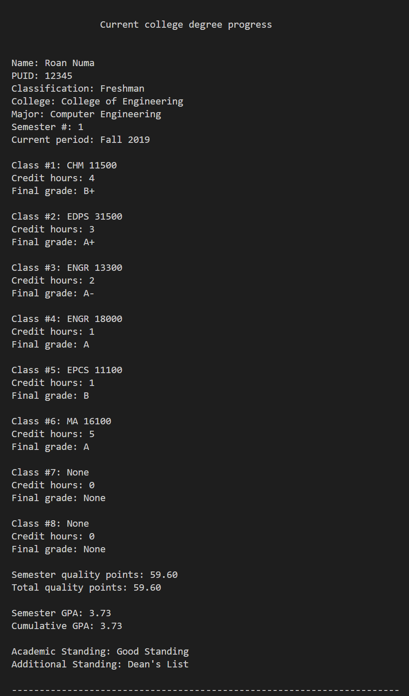
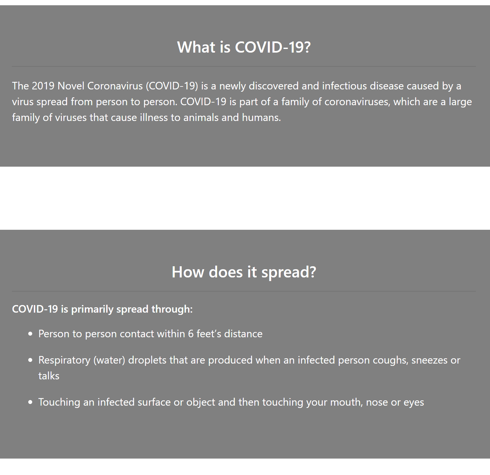
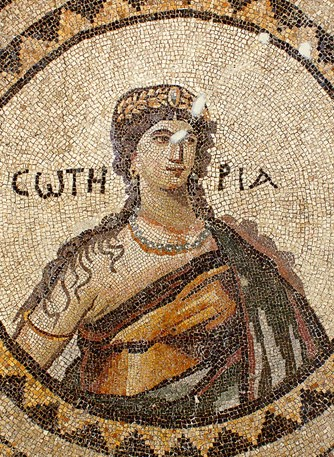
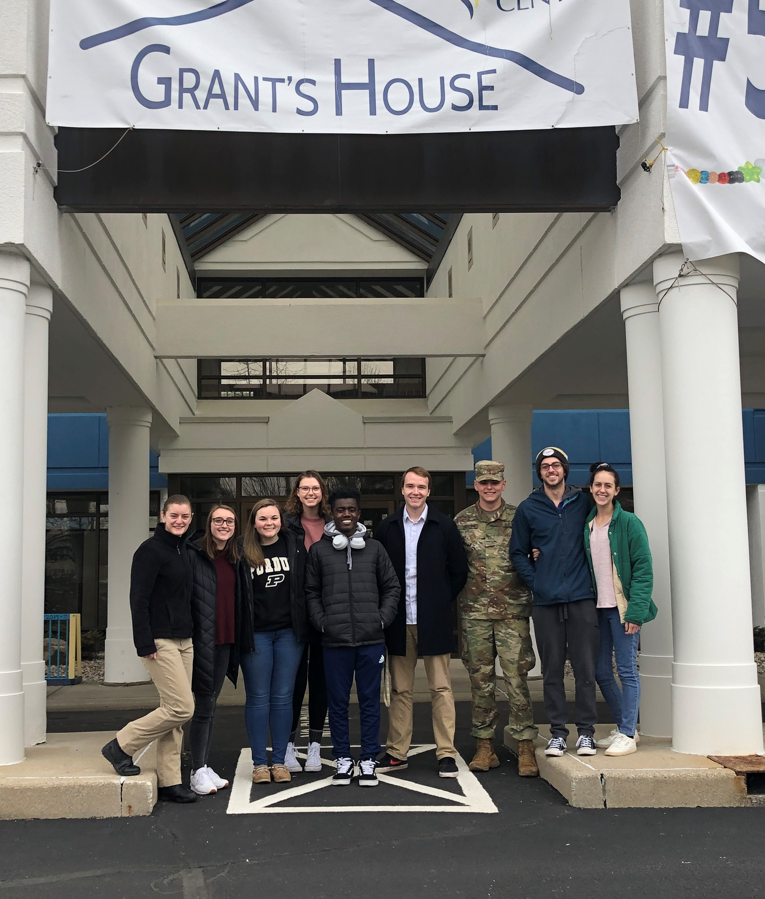
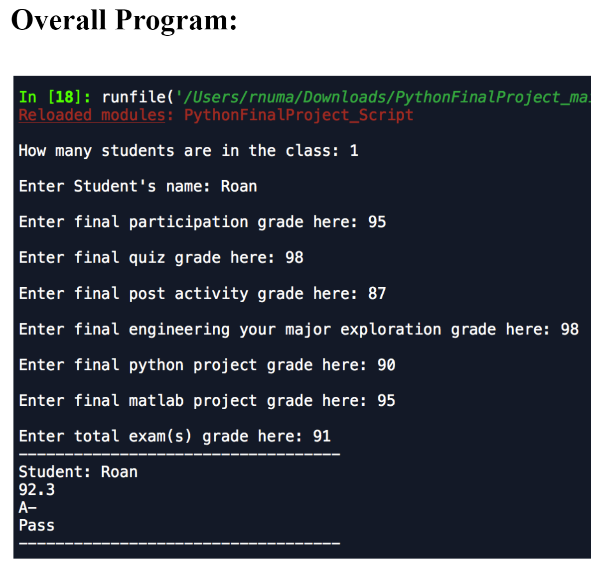

<!DOCTYPE html>

<html lang="en">

  <head>
  
    <title>Projects - Roan Numa"</title>
    <meta charset="utf-8">
    <meta name="viewport" content="width=device-width, initial-scale=1">
    <link rel="stylesheet" href="https://stackpath.bootstrapcdn.com/bootstrap/4.1.3/css/bootstrap.min.css" integrity="sha384-MCw98/SFnGE8fJT3GXwEOngsV7Zt27NXFoaoApmYm81iuXoPkFOJwJ8ERdknLPMO" crossorigin="anonymous">
    <link rel="stylesheet" type="text/css" href="style.css">
    
  </head>

  <body>


    <script src="https://code.jquery.com/jquery-3.3.1.slim.min.js" integrity="sha384-q8i/X+965DzO0rT7abK41JStQIAqVgRVzpbzo5smXKp4YfRvH+8abtTE1Pi6jizo" crossorigin="anonymous"></script>
    <script src="https://stackpath.bootstrapcdn.com/bootstrap/4.1.3/js/bootstrap.min.js" integrity="sha384-ChfqqxuZUCnJSK3+MXmPNIyE6ZbWh2IMqE241rYiqJxyMiZ6OW/JmZQ5stwEULTy" crossorigin="anonymous"></script>
    
    <script src="https://unpkg.com/@popperjs/core@2/dist/umd/popper.js"></script>
    <script src="https://unpkg.com/@popperjs/core@2"></script>
    
    <script src="main.js"></script>
    
  </body>
    

</html>
    


    <nav class="navbar navbar-expand-md fixed-top">

        <a class="navbar-brand text-white">Personal Webiste | Roan Numa</a>
    
        <button class="navbar-toggler navbar-dark" type="button" data-toggle="collapse" data-target="#main-navigation">
          <span class="navbar-toggler-icon"></span>
    
        </button>
    
        <div class="collapse navbar-collapse" id="main-navigation">
    
    
         <ul class="navbar-nav">
    
            <li class="nav-item">
              <a class="nav-link" href="index.html">Home</a>
            </li>

            <li class="nav-item">
              <a class="nav-link" href="ProfessionalExperience.html">Professional Experience</a>
            </li>
    
            <li class="nav-item">
                <a class="nav-link" href="Projects.html">Projects</a>
            </li>
    
            <li class = "nav-item">
                <a class="nav-link" href="Contact.html">Contact</a>
            </li>
    
            <li class="nav-item">
                <a class="nav-link" href="https://github.com/rnuma" 
                target="_blank">Github</a>
            </li>
  
            <li class="nav-item">
              <a class="nav-link" href="https://drive.google.com/file/d/1XVm-zjwuMMs2FSKy7jhpBdtE4uHA4UZy/view?usp=sharing" 
              target="_blank">Resume (Software/Firmware)</a>
            </li>
  
          <li class="nav-item">
             <a class="nav-link" href="https://drive.google.com/file/d/1liIqri58c8pX7xpicX10gI-8tyZm-7LO/view?usp=sharing" 
             target="_blank">Resume (PM)</a>
          </li>
    
    
         </ul>
    
      </div>
    
    </nav>
    
  
    


    <header class="page-header header2 container-fluid">
    
      <div class="overlay"></div>
  
      <div class="description">
  
          <h1>Projects 👨🏿‍💻</h1>
  
        </div>
  
  </header>


</div>


<div class="row justify-content-between">

    <div class="col-lg-5 col-md-4 col-sm-10 mb-0 TextBox">
        <h4 class="feature-title text-black text-center">Smart Bicycle Brake System 🚲</h4>
        <p></p>
        <h5 class="feature-title text-black text-center">Senior Design Project</h5>
        <p></p>
        <h6 class="feature-title text-black text-center">August 2023 - December 2023</h6>
        <hr></hr>
    <p class = "feature-title text-black span" >
      <h5>Project Overview</h5>
        For my Senior Design project, I collaborated in a team of 3 to build a smart bicycle brake system that aims to address the critical issue of 
        bike accidents and injuries that result from improper/premature braking in high-stress situations. Our smart bicycle brake system can be integrated
        into a pre-existing bicycle brake system and maintain the bicycle's original braking system. I was mainly responsible for programming our
        system's MCU and handling all financial purchasing for parts and orders.
    </p>

  </br>


    <div class="row d-flex justify-content-center" >
  
      <p class="text-left">
          <a class="btn btn-secondary btn-space" type = "button" data-toggle="collapse" data-target="#Button4" 
          aria-expanded="false" aria-controls="#Button4">
            Read more
          </a>

        <div class="collapse" id="Button4">
          <div class="card card-body">

            <p class = "feature-title text-black span" >
              <h5>System Components & Features</h5>
              Our system consists of a TF-luna LiDAR range sensor and caution LED for object proximity detection within 0-5 meters, two 25kg high torque servo motors for 
              front and rear braking, a variable brake lever to control servo motors, a gyroscopic incline sensor to control front or rear braking during incline or decline travel,
              and an ESP32 MCU to program the system together using Embedded C and an arduino IDE and I2C, UART, ADC, PWM communication. The entire system is powered by a 20V ion lithium battery, 
              with LM2596 DC-DC buck converters supplying 5V to the LiDAR sensor and gyroscopic sensor, and 6.8V to the brake lever and servo motors; an AMS1117-3.3 voltage regulator 
              powers 3.3V to the ESP32 MCU. The system can be powered off using the on-off switch connected to the battery. Our team was able to integrate our system sensors, MCU, 
              and power together on a singular PCB.
          </p>
      
          <p class = "feature-title text-black span" >
            <h5>How to use the Smart Bicycle Brake System</h5>
            While the user is riding the smart bicycle, braking of the servo motors can be controlled using the variable brake lever. If the LiDAR sensor detects an object
            within 3-6 meters, the caution LED will light on to warn the user of a close object. If the LiDAR sensor detects an object within 3 meters, the servo motors will
            activate braking and pulsate 5 times to help prevent an oncoming collision. The servo motors will remain in braking position while within 3 meters of an object and 
            will only release once out of range. If the LiDAR sensor detects an object within 3 meters and the user is traveling on a decline path of 0 degrees or less, the
            gyroscopic sensor will activate braking for only the rear servo motor. For an incline path of 30 degrees or more, the gyroscopic sensor will activate braking for only
            the front servo motor. This incline/decline braking feature helps prevent the user from losing control of the smart bike while braking during incline/decline travel. 
          </p>
      
          <p class = "feature-title text-black span" >
            <h5>Current Project Status</h5>
            Our team presented the Smart Bicycle Brake System during final project demonstrations. We also showcased our project in the Purdue Spark Challenge, a corporate-sponsored design 
            competition hosted by the Elmore Family School of Electrical and Computer Engineering in partnership with the ECE Student Society.
          </p>
  
          </div>
         </div>
        </p>
      </div>
    </div>
  
    <div class="col-lg-5 col-md-4 col-sm-10 mb-0 Website">
        
      
    
    </div>

</div>
  


  <div class="row justify-content-between">

    <div class="col-lg-5 col-md-4 col-sm-10 mb-0 TextBox">
        <h4 class="feature-title text-black text-center">Purdue SoCET (System-On-a-Chip Extensions Technology) 🔌</h4>
        <p></p>
        <h5 class="feature-title text-black text-center">Undergraduate Researcher</h5>
        <p></p>
        <h6 class="feature-title text-black text-center">January 2021 - December 2023</h6>
        <hr></hr>
       
    <p class = "feature-title text-black span" >
      <h5>Team Goal</h5>
      "The goal of Purdue SoCET is to provide students hands-on experience with a fully developed industry quality SoC design flow. 
      Members of the group engage with RTL design, physical design, PCB design, chip bringup, verification methods, an array of EDA tools 
      and software development. Through SoCET, a student can engage with the entire life cycle if a chip design."
  
    </p>

    <p class = "feature-title text-black span"> 
      <h5>Software Design Team</h5>
      During the Spring 2021 semester, I joined the Software Design team for Purdue SoCET. Together, we researched rust and embedded 
      rust programming fundamentals to understand how to add rust support for the AFTx06 SoC. 
    </p>
  
  </br>
  
    <div class="row d-flex justify-content-center" >
  
      <p class="text-left">
          <a class="btn btn-secondary btn-space" type = "button" data-toggle="collapse" data-target="#Button3" 
          aria-expanded="false" aria-controls="#Button3">
            Read more
          </a>
  
         
        <div class="collapse" id="Button3">
          <div class="card card-body">
  
            <p>Our team was able to set up and analyze chip simulations of AFTx06 SoC through a Cadence Simulator. Then we ran and compiled a simple rust program on the design. 
              For a fun demo project, we wrote a gaming program (similar to snake) using rust and a HiFive1 Rev B board. We hope that our findings from this semester will help 
              future teams that develop software (similar to Rust) for future chip designs.
            </p>

  
              <p>
                <h5>PCB Design Team</h5>
                For the Spring 2022 semester, I worked closely with the PCB design team to test and debug a PCB for the AFTx04 SoC. This PCB enables fast 
                verification of self-test procedure/simple tests ran on the AFTx04 and allows for easy interfacing with other circuits. I'm learned KiCad and soldering techniques to 
                better understand the design of our PCB, and add more components. Our team utilized electronic lab equipment to conduct incremental testing 
                for various electronic components on the PCB board.
              </p>

              <p>
                <h5>Test Engineering Team</h5>
                For the Fall 2023 semester, I worked closely with the Test Engineering team, a team new to SoCET this semester. The goal of the test engineering team was to
                 apply Design for Test (DFT) into the design process for different logic circuits. VLSI has a very huge need for increased reliability and testability. With our
                 semester-long project, we demonstrated the application of DFT to digital logic circuits and how it can be used to improve the reliability and testability of digital 
                 circuits. Our project involved following the DFT process, which included:

                  <ol type="1">
                      <p><li>Inserting scan inserted muxed-D flip-flops to replace the original flip flops.</li></p>
                      <p><li>Performing Automated Test Pattern Generation (ATPG) on scan inserted netlist to create reports indicating test quality and test application time.</li></p>
                  </ol>
                
                 Our team used the Genus tool from Cadence and the TestMax tool from Synopsys to implement scan insertion. ATPG on a scan inserted netlist was done using the Modus 
                 tool or TestMax tool. For our future work, we will be implementing DFT for the AFTx08 (the next System-on-Chip tapeout by Purdue SoCET) and enhancing the overall 
                 efficiency, reliability and testability of the tapeout process.
              </p>
  
            </br>
  
              <p class ="text-center">Click <u><a href="https://engineering.purdue.edu/SoC-Team" target="_blank" 
                class="text-dark">here</a></u> to view our Team Website and <u><a href="https://drive.google.com/file/d/1hiejzpF5_NzUyz6etkm9MpgvXzO52TvI/view?usp=sharing" target="_blank" 
                class="text-dark">here</a></u> for our Rust Research Presentation!
              </p>
                
  
              <p></p>
  
          </div>
         </div>
        </p>
      </div>
    </div>
  
      
<div class="col-lg-5 col-md-4 col-sm-10 mb-0 Website">
        
  

</div>
  
  
     </div>
  </div>
      

</div>


</div>


  <div class="row justify-content-between">

      <div class="col-lg-5 col-md-4 col-sm-10 mb-0 TextBox">
          <h4 class="feature-title text-black text-center">Personal Website 📁</h4>
          <p></p>
          <h5 class="feature-title text-black text-center">Personal Project</h5>
          <p></p>
          <h6 class="feature-title text-black text-center">August 2020</h6>
          <hr></hr>
       <p>
          I decided to put the web development skills I learned this summer to the test and created my own personal website 
          from scratch! I used HTML for the website’s pictures and information, CSS for the color and design, and JavaScript 
          for the background pictures. I also used Bootstrap and jQuery frameworks to help with styling, layout and website 
          responsiveness. My goal for this project was to showcase my education, skills, projects and experiences in a creative 
          manner, and go more in depth with my projects and experiences. Now that I have my own personal website, I’ll continue 
          to add more experiences as I progress through my college career!
      </p>

     
    </br>


    <p>
      <form class = "text-center" action="https://github.com/rnuma/roannuma" method="get" target="_blank">
       <button type="submit">Source Code</button>
      </form>
  </p>
        

  </div>

  <div class="col-lg-5 col-md-4 col-sm-10 mb-0 Website">
          
    

</div>


</div>


    <div class="row justify-content-between">

        <div class="col-lg-5 col-md-4 col-sm-10 mb-0 TextBox">
            <h4 class="feature-title text-black text-center">College Degree Tracker 🎓</h4>
            <p></p>
            <h5 class="feature-title text-black text-center">Personal Project</h5>
            <p></p>
            <h6 class="feature-title text-black text-center">August 2020</h6>
            <hr></hr>
            For one of my personal projects this summer, I created a program using C/C++ that tracks a Purdue undergraduate student’s 
            progress in a particular major by allowing the user to store their progress each semester into a binary file to view, modify or 
            delete. My goal for this project was to make an alternative and easier method for students to track their progress towards a 
            college degree, rather than requesting transcripts every semester or using the Purdue GPA calculator to predict their grades.
        </p>

        </p> The program will ask the user for: name, PUID (college ID), classification, college (within Purdue), major, semester number, 
        basic information for each class (name, number of credit hours, letter grade), total number of credit hours from past semesters, 
        and total number of quality points from past semesters.
        <p>

        <p>The program includes a GPA calculator that will calculate the user’s semester GPA and cumulative GPA based on their input for 
          letter grades, credit hours and quality points. In order for the user to access, modify or delete their college record, they’ll 
          have to enter in their unique PUID number in order to access their file.
        </p>

      </br>


      
      <p>
        <form class = "text-center" action="https://docs.google.com/document/d/18lAMJUns-sj8E_dM8OXYOStLUBUQo8pKTyZCC9M6vhE/edit?usp=sharing" method="get" target="_blank">
         <button type="submit">Project Write-Up</button>
        </form>
    </p>


      <p>
        <form class = "text-center" action="https://github.com/rnuma/College-Degree-Tracker" method="get" target="_blank">
         <button type="submit">Source Code</button>
        </form>
    </p>
          

    </div>

    <div class="col-lg-5 col-md-4 col-sm-10 mb-0 CollegeDegreeTracker">
            
      

  </div>


  </div>


  <div class="row justify-content-between">

    <div class="col-lg-5 col-md-4 col-sm-10 mb-0 TextBox">
        <h4 class="feature-title text-black text-center">COVID-19 "Info To Know" Website 🦠</h4>
        <p></p>
        <h5 class="feature-title text-black text-center">Personal Project</h5>
        <p></p>
        <h6 class="feature-title text-black text-center">July 2020</h6>
        <hr></hr>
       
    <p class = "feature-title text-black span" >This summer I decided to learn web development in order to create and design websites from scratch. 
      Because of the ongoing information about COVID-19 and the amount of misinformation there is online and on social media about the virus, I decided to 
      build a website using HTML, CSS and JavaScript in order to provide reliable information about COVID-19 that I believe everyone should know. I also used
      Bootstrap and jQuery frameworks to improve the overall design and interactivity of the website as well. 
    </p>

    </p> The website I made is easy to navigate, answers common questions surrounding COVID-19, and contains links to important resources 
    for viewers. I even provided my own personal advice and links to the credible sources I used for the information presented on the website. 
    My goal for this project was to provide people with accurate information about COVID-19 to help stop the spread of misinformation and potentially 
    save someone’s life. 
    <p>

    </br>


    <p>
      <form class = "text-center" action="https://rnuma.github.io/COVID19-Website/" method="get" target="_blank">
       <button type="submit">Website</button>
      </form>
   </p> 


    <p>
      <form class = "text-center" action="https://github.com/rnuma/COVID19-Website" method="get" target="_blank">
       <button type="submit">Source Code</button>
      </form>
   </p> 

      

</div>

<div class="col-lg-5 col-md-4 col-sm-10 mb-0 Covid19Website">
        
  

</div>


</div>


<div class="row justify-content-between">

  <div class="col-lg-5 col-md-4 col-sm-10 mb-0 TextBox">
      <h4 class="feature-title text-black text-center">Soteria 🏠</h4>
      <p></p>
      <h5 class="feature-title text-black text-center">SigmaHacks 2.0</h5>
      <p></p>
      <h6 class="feature-title text-black text-center">July 2020</h6>
      <hr></hr>
     
  <p class = "feature-title text-black span" >This summer, I participated in a 24-hour hackathon called SigmaHacks 2.0. I was able to team up 
    with 3 other hackers to create a full stack web application that enables front-line workers to search for and purchase nearby housing rentals 
    amidst the COVID-19 pandemic. Our platform also allows for landlords to post housing rentals for front-line workers to occupy. 
  </p>

  <p>To build this project, we used Python for the backend, Django for the web framework, HTML and CSS for the frontend and SQLite for the database. 
    I focused mainly on the frontend development and created an interactive chatbot feature to help users check for COVID-19 related symptoms and determine 
    if they need to seek medical care immediately. 
  </p>


  </p>The goal for our project was to help front-line workers find a place to temporarily stay in order to keep their families and community safe 
  from being exposed to COVID-19. We also wanted to create incentives for landlords to have consistent renters due to the growing marketplace and the 
  steady demand for temporary housing despite the global pandemic. A fun fact about our project is that our project name, “Soteria”, is the name of the 
  goddess of safety in Greek mythology!
  <p>


  </br>

  


  <p>
    <form class = "text-center" action="https://devpost.com/software/soteria-nve0wa" method="get" target="_blank">
     <button type="submit">Hackathon Submission</button>
    </form>
    </p>


  <p>
    <form class = "text-center" action="https://github.com/AdityaGoyal1999/Soteria" method="get" target="_blank">
     <button type="submit">Source Code</button>
    </form>
  </p>


</br>


</div>


<div class="col-lg-5 col-md-4 col-sm-10 mb-0 Soteria">
      


</div>


</div>


<div class="row justify-content-between">

  <div class="col-lg-5 col-md-4 col-sm-10 mb-0 TextBox">
      <h4 class="feature-title text-black text-center">Technology Assisting Veterans 🦾</h4>
      <p></p>
      <h5 class="feature-title text-black text-center">Purdue EPICS Program</h5>
      <p></p>
      <h6 class="feature-title text-black text-center">August 2019 - May 2020</h6>
      <hr></hr>
     
  <p class = "feature-title text-black span" >
    <h5>Team Overview</h5>
    Throughout my freshman year here at Purdue University, I was part of the Purdue EPICS (Engineering Projects in Service) program. I teamed up with 
    VETS (Technology Assisting Veterans), a team that focuses on developing mobile impairment technologies for veterans in the surrounding community. 
    Within VETS I was a part of two sub-teams, Operation Row and Operation Swim.
  </p>

  
  <p class = "feature-title text-black span" >
    <h5>Operation Row</h5>
    For Operation Row, we designed a prosthetic arm device for a veteran named Jared Bullock. Jared was wounded during a mission and lost his right 
    limb, which affected his gym training. Our prosthetic arm device would connect Jared to a seated row machine and allow him to perform a rowing exercise safely and properly. 
  </p>

</br>

  <div class="row d-flex justify-content-center" >

    <p class="text-left">
        <a class="btn btn-secondary btn-space" type = "button" data-toggle="collapse" data-target="#Button2" 
        aria-expanded="false" aria-controls="Button2">
          Read more
        </a>

       
      <div class="collapse" id="Button2">
        <div class="card card-body">

          <p class = "feature-title text-black span" >
            <h5>Operation Swim</h5>
            For Operation Swim, we designed a floatation and entry & egress device for a 12 year-old boy named Charlie. Charlie has a condition 
            known as cerebral palsy which makes it hard for him to have fun in the pool. So our team partnered with the Grant House Foundation in West Lafayette, 
            Indiana to help create a floatation device (similar to a life jacket) that would provide Charlie the support he needs to enjoy his time safely in the pool.
          </p>

          <p>
            <h5>Project Contributions</h5>
            For Operation Row, I helped with the outer design of the arm socket device by smoothing out the edges with sanding tools and cutting out 
            the socket holes using the dremel tool. I also assisted with the evaluation and research of our design methods and helped eliminate the design 
            flaws of the vest that would attach to Jared and connect with the socket device. For Operation Swim, I contributed to the preliminary design of 
            the ADA regulated entry & egress device and focused on the failure analysis of the design and effects of device failure by using severity guidelines 
            and ratings to evaluate the efficiency of the device.
          </p>

            <p> </p>

            <p>
              <h5>Webmaster/Communication Officer Role</h5>
              In addition my to personal contributions, I also served as the Webmaster / Communication Officer for the VETS team. I reconstructed and managed our 
              team’s website, shared team and project updates with the EPICS community via Twitter, and was in charge of the team-recruiting efforts by creating physical 
              and virtual recruitment team flyers for prospective EPICS students. 
            </p>

            <p></p>

            <p>
              <h5>Takeaways from EPICS</h5>
              I took away so much from being a part of VETS in my freshman year. I learned how to properly collaborate and communicate within a team and understood how engineers 
              work towards designing solutions to specific problems that involve connecting an individual to a specific product. Thanks my experience with VETS, I am more 
              confident when it comes working within an engineering team and following a design process towards an efficient solution.
            </p>

          </br>

            <p class ="text-center">Click <u><a href="https://epicsvets.wixsite.com/mysite" target="_blank" 
              class="text-dark">here</a></u> to view our team website and <u><a href="https://twitter.com/epicsvets" target="_blank" 
              class="text-dark">here</a></u> for our team Twitter page!
            </p>
              

            <p></p>

        </div>
       </div>
      </p>
    </div>
  </div>


    <div class="col-lg-5 col-md-4 col-sm-10 mb-0 EPICSPurdue">
      
    

    </div>


   </div>
</div>


<div class="row justify-content-between">

  <div class="col-lg-5 col-md-4 col-sm-10 mt-mb-0 TextBox">
      <h4 class="feature-title text-black text-center">ENGR 133 Grade Calculator 🖩</h4>
      <p></p>
      <h5 class="feature-title text-black text-center">Course Project</h5>
      <p></p>
      <h6 class="feature-title text-black text-center">November 2019 - December 2019</h6>
      <hr></hr>
     
  <p class = "feature-title text-black span" >In the fall semester of my freshman year, I took my intro to engineering course. 
    ENGR 133 (Transforming Ideas To Innovation) focused on introducing students to Python and MATLAB programming. For the final 
    course project of the year, I built a calculator using Python to calculate the course grade, letter grade and pass/fail grade 
    of any student in ENGR 133.

  </p>

  </p> This was my first time building a project using Python. I was able to incorporate what I learned throughout the semester into 
  making my project. I used loops, if-else statements, and a user input function within my program to carry out the calculations and 
  display the student’s data. My goal for this project was to make it easier for students to calculate or predict their final grade in 
  ENGR 133 since we were nearing the end of the semester.
  <p>

  </br>


  <p>
    <form class = "text-center" action="https://drive.google.com/file/d/1QkHBw-alt-r9xj4lbnBimyQtNbFxMl1b/view?usp=sharing" method="get" target="_blank">
     <button type="submit">Project Report</button>
    </form>
</p>


    <p>
      <form class = "text-center" action="https://github.com/rnuma/ENGR-133-Grade-Calculator" method="get" target="_blank">
       <button type="submit">Source Code</button>
      </form>
  </p>

    

</div>

<div class="col-lg-5 col-md-4 col-sm-10 mt-mb-0 PythonProject">
      


</div>


</div>


<footer class="page-footer font-small teal pt-5">


   
  <div class="footer-message text-center py-7">
     <p>Programmed with 🖤 by Roan Numa</p>
    
      <p>See how I made it <u><a href="https://github.com/rnuma/roannuma" target="_blank" class="text-dark">here</a></u>
  </div>


</footer>


